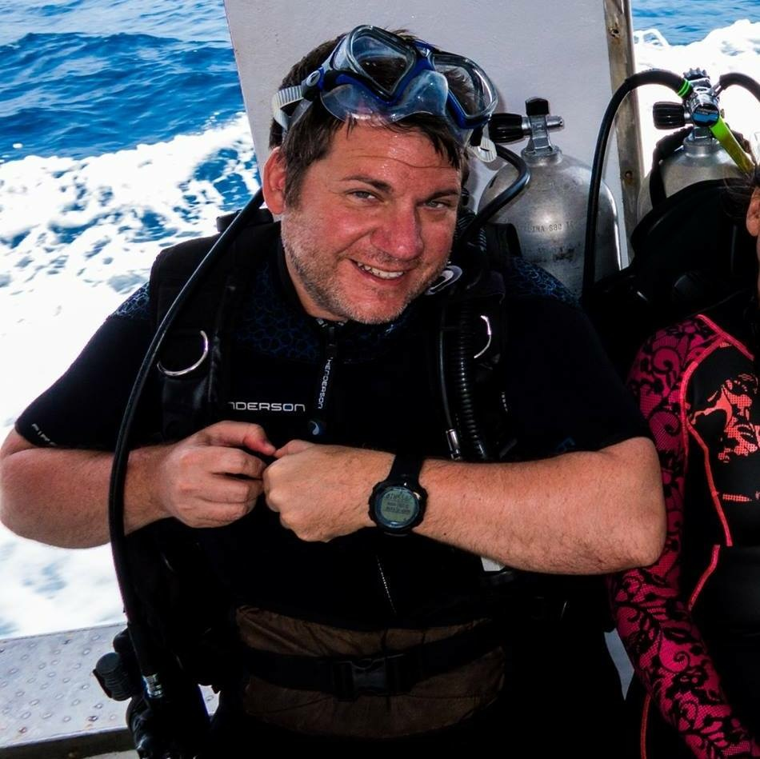

 I live in South Plainfield, NJ, but grew up in Warren county near the Pennsylvania border. I went to college at Rutgers University where I graduated with a double-major in Political Science and Journalism and a minor in Italian. It was my senior year at college where I learned about web design and have been hooked on web designing ever since.
Back then I had to learn to code without the benefit of software like Dreamweaver and using only a basic text editor. Right out of college, I was hired by an ISP where I furthered my web development skills by working on UNIX servers and setting up e-commerce sites for small local businesses and also implementing JavaScript and CSS into those sites again with nothing more than a text editor.
I was then hired to by AT&T to manage and maintain their internal Content Management System where I oversaw the redesign of the layout and architecture of the CMS as well as ensured proper site functionality and usability. After a few years of managing the CSM, I pivoted into doing more network engineering eventually earning my CCNA and becoming a Subject Matter Expert and trainer for new hires for the last 11 years. But I always had a desire to go back into the web development field.
I like scuba diving, traveling, and playing poker. I also like rock music, seeing stand-up comedy, and going to the movies. I also have a cat who's kind of a jerk.